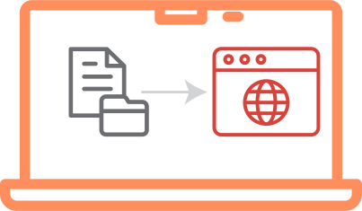
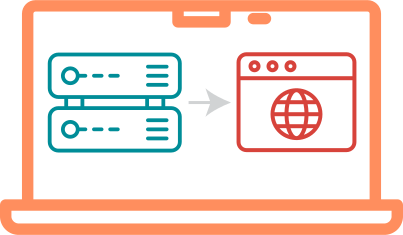
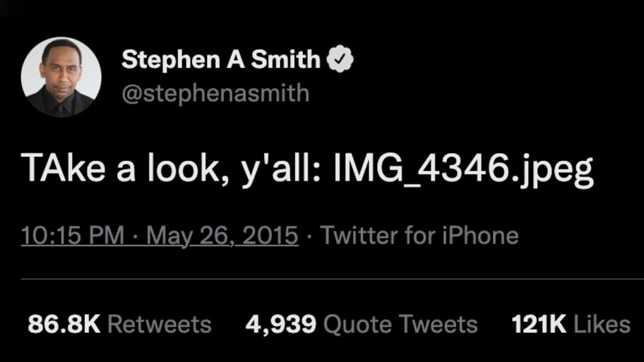
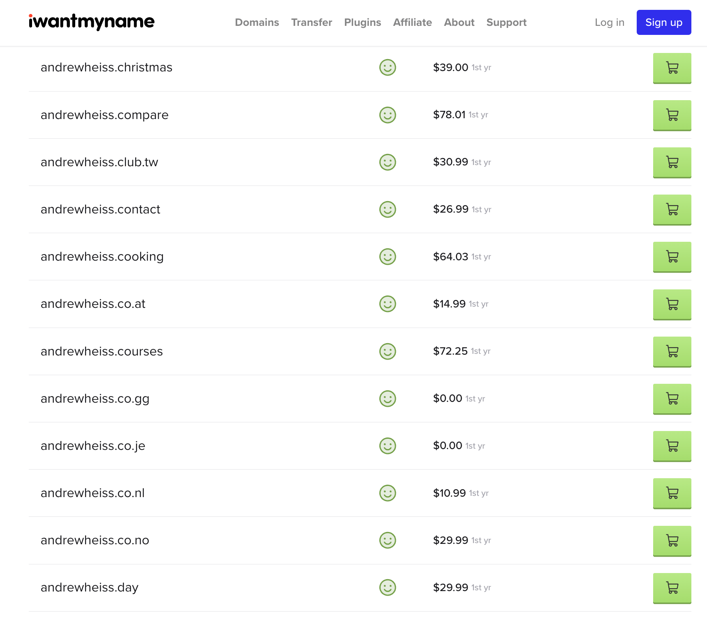
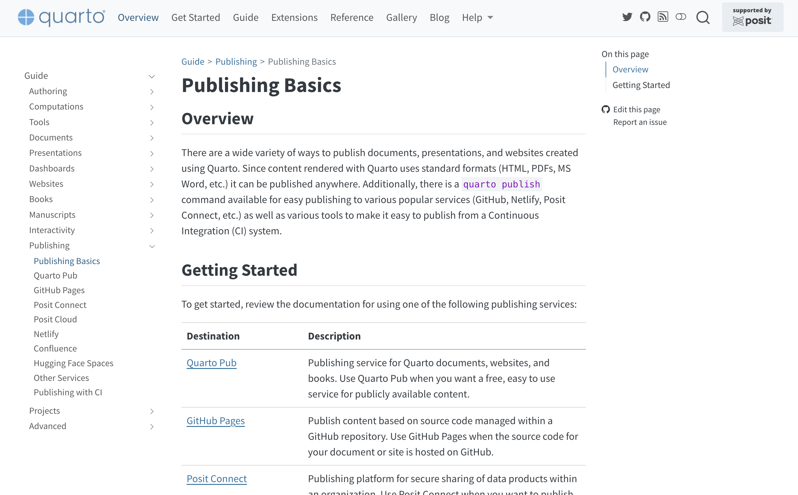
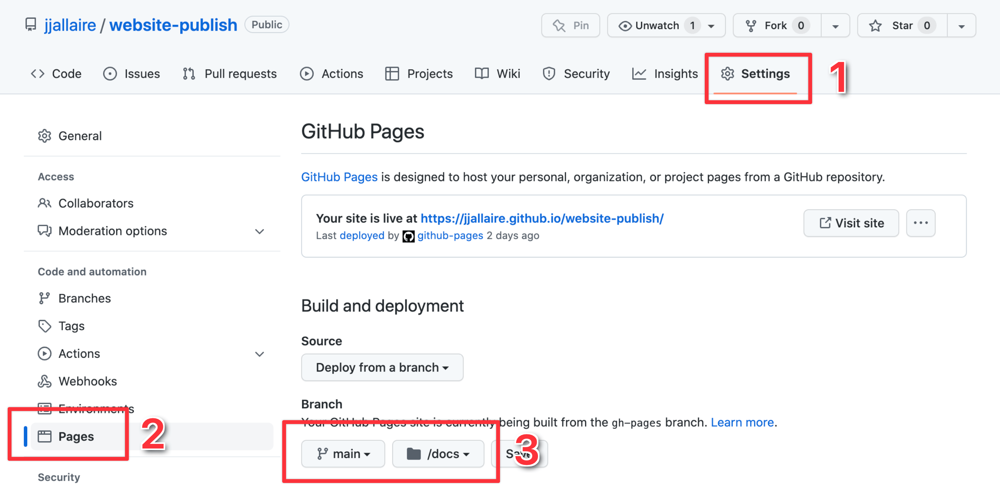

07:00
Monica Chin, “File not found,” The Verge, September 22, 2021
HTML
CSS
There’s no need for fancy web servers—
Quarto puts the whole rendered website in _site/
Your job is to put that _site/ on a server.
Web servers are computers that (1) store files and (2) show those files as websites to web browsers.
file:///Users/andrew/Desktop/example/index.html

http://localhost:3333/


All computers on the internet have IP addresses
Domain names map IP addresses to memorable, human-readable names
Server space
Can be free!
Typically $5+/month
Domain name
Not free!
$10–20+/year

Quarto has built-in support for several different hosting services for publshing documents, presentations, dashboards, and websites
What: Free hosting service for all types of Quarto documents, run by Posit
When to use: When you want to publish something on the internet quickly and you don’t really care about (1) privacy or (2) the domain name
Difficulty level: The easiest!
Go to quartopub.com and create a free account. Make sure you’re logged in.
In the terminal, run this:
Select Quarto Pub and press enter. Answer all the other questions.
Wait for the site to render and upload.
Done!
To update the site later, run quarto publish in the terminal again.
Manage other site settings at your quartopub.com dashboard.
Publish your playground website to Quarto Pub.
Go to quartopub.com and create a free account. Make sure you’re logged in.
In the terminal, run this:
Select Quarto Pub and press enter. Answer all the other questions.
Wait for the site to render and upload.
07:00
What: Free hosting service for repositories hosted on GitHub
When to use: When you want a (free) longer term hosting solution (with a custom domain if you want) and you’re already using GitHub for version control
Difficulty level: Medium
Easy: Render your site to docs/ and include that folder in your git repository.
Medium: Use the quarto publish terminal command to render the site and push it to a gh-pages branch.
Hard: Use GitHub Actions to build an on-the-fly virtual computer that remotely rebuilds and publishes your site every time you commit to your repository.
We’re going to do Option 1!
General version control
Remote version control hosting + collaboration
Helpful resources:
Make changes
Commit changes to lock them in
Push commits to remote server
Advanced stuff you don’t have to worry about: branches, collaboration, pull requests, etc.
.gitignoreUse .gitignore to hide things from git.
General rules
Commit things that make outputs; don’t commit outputs themselves.
Don’t commit user-specific things (or passwords!)
Part 1: Get your project code on GitHub
Go to github.com and create a free account.
Add a .gitignore file to your website project with this:
Initialize a git repository for your website project.
Commit the files and push to GitHub.
Part 2: Tell Quarto to use GitHub Pages
Change the output-dir option in _quarto.yml to docs.
Add an empty file named .nojekyll to the root of your website project (this tells GitHub to not run its own static site generator).
Render your site.
Commit the newly created docs/ folder and push to GitHub.
Part 3: Tell GitHub Pages to serve your site
From your GitHub repository, go to Settings > Pages and configure the repository to publish from the docs directory of your main branch.

Wait for GitHub to build and deploy the site.
To update the site later, render the site, commit to GitHub, and wait for the site to rebuild.
Track the progress under the “Actions” section of your GitHub repository.
Add a custom domain at Settings > Pages
Get your project code on GitHub
Go to github.com and create a free account.
Add a .gitignore file to your website project with this:
Initialize a git repository for your website project.
Commit the files and push to GitHub.
10:00
Tell Quarto to use GitHub Pages
Change the output-dir option in _quarto.yml to docs.
Add an empty file named .nojekyll to the root of your website project (this tells GitHub to not run its own static site generator).
Render your site.
Commit the newly created docs/ folder and push to GitHub.
10:00
Tell GitHub Pages to serve your site
From your GitHub repository, go to Settings > Pages and configure the repository to publish from the docs directory of your main branch.
Wait for GitHub to build and deploy the site.
10:00